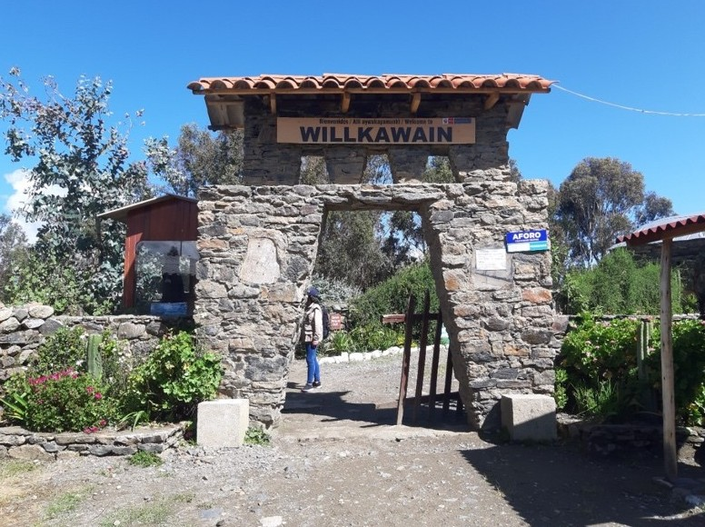

Cada muro milenario de piedra y barro guarda la memoria de nuestros antepasados Wari. Proteger este tesoro en el Callejón de Huaylas es un acto de identidad, orgullo y compromiso con las futuras generaciones.

Ingreso Oficial · Centro Poblado Paria
Explora las vistas reales del complejo capturadas en el sitio, destacando su mampostería de piedra y el imponente mausoleo.
El acceso principal recibe a los visitantes en el centro poblado de Paria, invitándonos a reflexionar sobre la importancia de conservar este monumento histórico frente al impacto ambiental y el turismo desordenado.
"Conservar Willcahuain es un compromiso vivo: cada piedra unida con barro representa el ingenio de nuestros antepasados que merece ser preservado intacto para las nuevas generaciones."
Estudiantes, guías, investigadores y ciudadanos pueden proponer iniciativas para mejorar la conservación física y la difusión educativa del complejo.
Datos oficiales basados en la Ficha MINCETUR del Monumento Arqueológico de Willkawain[cite: 1].
A 7 km al noreste de Huaraz (aprox. 20-25 minutos en auto o transporte hacia el centro poblado de Paria)[cite: 1].
Lunes a Domingo de 08:00 a.m. a 05:00 p.m. Todo el año[cite: 1].
No tocar los muros líticos antiguos, no dejar residuos sólidos y respetar los senderos debidamente señalizados.
Centro Poblado de Paria, Independencia, Huaraz[cite: 1]
Sella tu compromiso personal para proteger, difundir y valorar el legado Wari de Willcahuain.